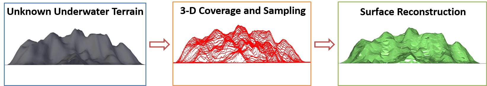

Validations on the Player/Stage Simulator (Complex Islands)
SLAM-based Lawn Mowing
Research Projects
1. Coverage Path Planning in Unknown Environments
| Description: Many real-world applications require to completely search an area of interest, such as floor-cleaning, oil-spill cleaning, lawn mowing, etc. In general, the layout of the target area is unknown. Thus the algorithm should operate on-line, and be able to adapt the coverage path in situ. This is known as the Coverage Path Planning Problem. A Novel Coverage Strategy: We proposed a novel sensor-based coverage path planning algorithm that guarantees complete coverage in unknown environments. This algorithm can produce shorter trajectory and less number of turns as compared to a number of popular existing coverage algorithms. Experiments: We have validated its efficacy both on the high-fidelity simulator of Player/Stage, and in real-world experiments. The autonomous vehicle carries various on-board sensing systems that provides real-time information of localization, heading and obstacle information. |
|
Validations on the Player/Stage Simulator (Complex Islands) |
SLAM-based Lawn Mowing |
1.5. Extended Work: 3-D Coverage in Unknown Environments
| Description: The above presented 2-D coverage method has been extended to completely scan unknown 3-D space. We use the underwater terrain reconstruction as an example for illustration. 3-D Coverage Strategy: We proposed a novel 3-D coverage strategy using multi-level coverage trees, which guarantees complete coverage thus can reconstruct scanned areas based on sampled point cloud. Experiments: We have validated its efficacy on the Robot Operating System (ROS) with UWSim.  |
2. Path Planning for Curvature Constrained Vehicles
| Description: Under construction. Idea: Under construction. Experiments: Under construction. |